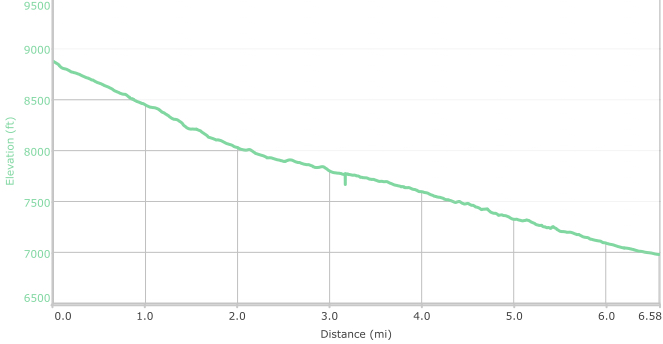

Hike New Mexico
w/ Tom & Ken
Lower Tesuque Creek Hike
| Difficulty | Round-trip | Type | Elev. Chg. | Exposure | Wow Factor | Facilities | Seasons | Flickr | Get There |
|---|---|---|---|---|---|---|---|---|---|
| Easy | 7.3 miles | 2-car | 1800 ft | Sun, some shade | River valley | None | All | Album | Directions |



- Jun 7, 2016: Most of the trail is well traveld and easy
- Jun 7, 2016: Jack doesn't waste any opportunities to get wet!
- Jun 7, 2016: Some open areas along the way
- Jun 7, 2016: Tom follows a downward trend...
- Jun 7, 2016: A field of beauties
- Jun 7, 2016: Be prepared for numerous crossings!
- https://www.flickr.com/photos/139088815@N08/27811436156/in/photostream/
- https://www.flickr.com/photos/139088815@N08/27233788453/in/photostream/
- https://www.flickr.com/photos/139088815@N08/27568064970/in/photostream/
- https://www.flickr.com/photos/139088815@N08/27568095280/in/photostream/
- https://www.flickr.com/photos/139088815@N08/27811398236/in/photostream/
- https://www.flickr.com/photos/139088815@N08/27769818371/in/photostream/
The most scenic part of the Tesuque Creek is this lower 6-7 miles, where the trail descends steadily, but easily, from the juncture at Borrego/Bear Wallows Trail down to the Bishops Lodge Road area. The best way to do this is to arrange to have a car on each end of the hike, and descend from the top to the bottom. In the spring, the water may be a bit higher than in the summer, so some of the creek crossings (most have no bridge) are a little more exciting(!). The trail parallels the creek the entire distance and makes for a very pleasant hike. Occasionally the forest opens up into a lovely meadow presenting nice opportunities for a break.